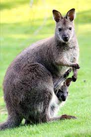

Zwei Fünftel des Landes liegen in den Tropen. Der australische Busch umfasst eine große
Vielfalt von Landschaften – vom Regenwald bis hin zu weiten Savannen. Das Zentrum des Kontinents besteht aus einem
mit Wüsten und Halbwüsten bedeckten Plateau. Im Kontrast dazu sind viele Küstengebiete sehr fruchtbar; besonders
der Landstreifen östlich der Great Dividing Range, die sich vom Norden Queenslands bis zum Süden Victorias
hinzieht. Der höchste Berg Australiens ist der Mount Kosciusko (2.230 Meter) in den australischen Alpen.
Vegetation, Pflanzen
Von den rund 20.000 heimischen Pflanzenarten in Australien sind ca. 85 % ausschließlich auf diesem Kontinent zu
finden. Typisch für die australische Vegetation sind die Eukalyptus- und Akazienbäume. Von beiden gibt es über 600
Arten.
Tierarten
Typische Vertreter der australischen Tierwelt sind die Beuteltiere. Bekannte Vertreter sind die
Kängurus mit über 40 Arten, der Koala(Seite1), der Wombat, der
Beutelteufel, die Beutelmaus
und die Gattung der
Kletterbeutler (Possums). Einzigartig auf der ganzen Welt sind Eier legende Säugetiere (Kloakentiere), die nur in
Australien und Neuguinea vorkommen.

Traditionelles Australien
Alice Springs Camel Cup
Obwohl die Kamele nicht aus Australien stammen, sondern aus Afrika gebracht wurden, haben sie sich dennoch in eine
große touristische Attraktion verwandelt. Der Wettbewerb von Alice Springes im Northern Territory ist eines der
bekanntesten Rennen. Dieser Wettbewerb findet seit 1970 statt und gehört zu den beliebtesten Veranstaltungen wegen
seiner zwanglosen und festlichen Atmosphäre.
Koalas Herkunft Australien
Ernährung
Koalas leben fast ausschließlich von Eukalyptusblättern und -rinde
Koalas ernähren sich fast ausschließlich von Blättern und Rinde sowie Früchten ganz bestimmter Eukalyptusarten. In
ganz Australien nutzen sie nur etwa 70 der über 600 bekannten Eukalyptusarten, lokal sogar nur 5–10 Arten.
Innerhalb eines begrenzten Gebietes werden in der Regel nicht mehr als zwei bis drei Eukalyptus-Sorten zur
Nahrungsaufnahme genutzt (primäre Nahrungsbäume). Eine Vielzahl anderer Bäume, eingeschlossen einige
Nicht-Eukalyptus-Arten, werden gelegentlich zur Futteraufnahme oder für andere Zwecke (z. B. Ausruhen, Schlafen)
aufgesucht. Gelegentlich aufgenommene Erde liefert zusätzliche Mineralien.
Ein erwachsener Koala benötigt pro Tag rund 200 bis 400 Gramm Blätter. Bei der Nahrungsaufnahme sind Koalas
gezwungenermaßen äußerst wählerisch, denn Eukalyptus enthält Giftstoffe, die der Koala zwar in gewissen Maßen
tolerieren kann, aber zu hohe Konzentrationen sind auch für ihn giftig. Zuerst strecken sie einen Arm aus und
pflücken mit großer Sorgfalt einige ausgewählte Blätter, bevorzugt ältere, in denen die Giftstoffe nicht mehr so
konzentriert vorliegen. Danach beschnuppern sie sie sorgfältig, bevor sie einen Bissen nehmen. Zuletzt werden sie
zu einem Brei zerkaut und geschluckt. Koalas trinken äußerst selten. Sie decken ihren Wasserbedarf hauptsächlich
durch die sehr wasserreichen Eukalyptus-Blätter. Von geringerer Bedeutung sind Tau und Regentropfen. In
Trockenzeiten gehen sie allerdings trotz aller Gefahren an Wasserstellen. Interessant ist in diesem Zusammenhang
auch, dass der Name „Koala“ aus einer Sprache der Aborigines stammt und so viel wie „ohne Wasser“ bzw. „ohne zu
trinken“ bedeutet. (Siehe auch den Abschnitt „Aborigines“ weiter unten.)
Die Zähne der Koalas (I 3/1, C 1/0, P 1/1, M 4/4 ×2 = 30) sind gut an die Eukalyptusnahrung angepasst. Mit den
oberen und unteren Schneidezähnen pflücken die Tiere die Blätter. Ein Spalt zwischen Schneide- und Backenzähnen
ermöglicht es, mit der Zunge die Blattmasse wirkungsvoll hin und her zu schieben, ohne sich zu beißen. Die
Backenzähne sind so geformt, dass sie die Blätter schneiden und zerreißen und nicht nur zermalmen. So entziehen
die Zähne den Blättern die Feuchtigkeit und zerstören die Zellwände, was die Verdauung erleichtert.
Koalas entnehmen dem Eukalyptus Energie in Form von Zuckern, Stärken, Fetten und Eiweißen. In einem relativ
langen
Verdauungsprozess werden alle verwertbaren Nährstoffe und das Wasser entzogen. Entsprechend der
schwerverdaulichen, wenig energiereichen und sogar toxischen Pflanzennahrung ist der Blinddarm der Koalas
ungewöhnlich lang (bis 2,5 m). Dort helfen Bakterien[5] bei der Aufarbeitung der Zellwände und lassen eine Art
Gärung stattfinden. Zudem ermöglicht ein sehr langsamer Stoffwechsel, den Eukalyptus über lange Zeit zu
speichern,
in der ihm das Maximum an Energie entzogen wird. Gleichzeitig folgt aus dem langsamen Stoffwechsel ein geringer
Energieverbrauch, so dass dieser niedriger ist als der anderer Pflanzenfresser.